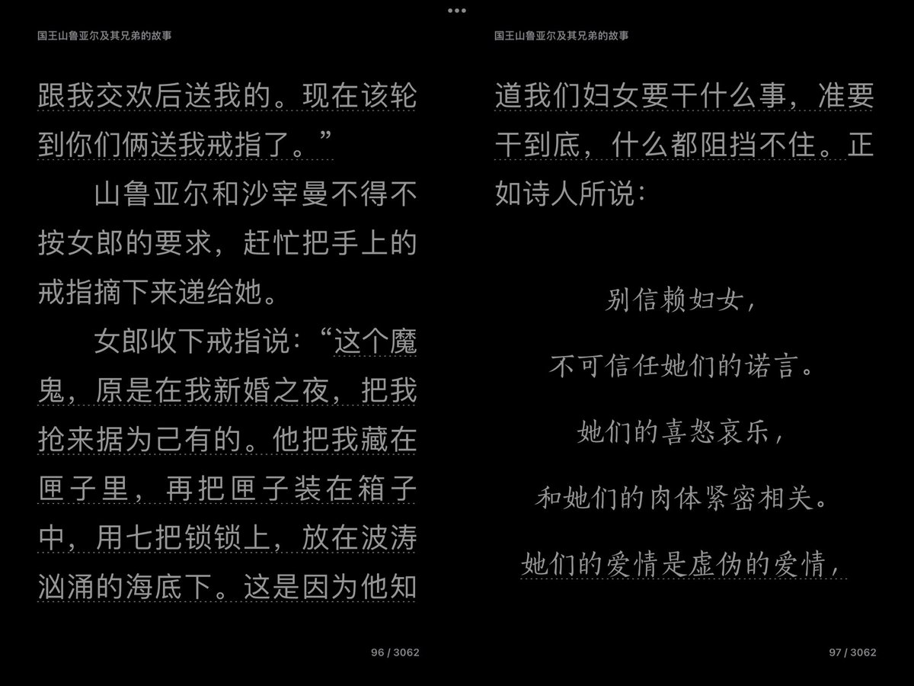
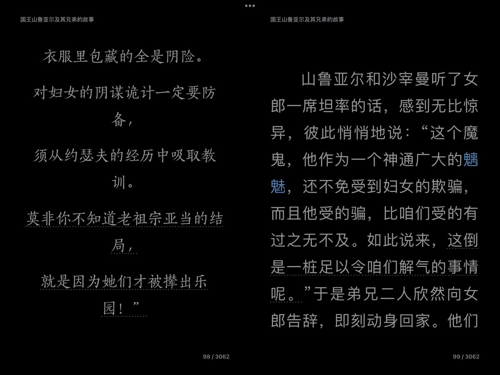

asuka 🏳️⚧️🍥🏳️🌈🏴
@H4lf_L13_F8964
@HacchiTheMaid ಥ_ಥ


Hacchi🏳️⚧️
@HacchiTheMaid
半夜焦虑的睡不着觉，给男朋友打电话念天方夜谭，从开头山鲁亚尔和沙宰曼的故事开始念，念叨水手与毛驴的故事为止，有点被震撼到x
感觉在辱女这方面还是清真教比较源远流长】大概讲的就是两个国王出门结果他们的王后一个和乐师通奸，一个开淫趴，国王难受跑了又遇到魔鬼的妻子出轨，然后每天娶和鲨老婆 https://t.co/4zeGhwcjm1